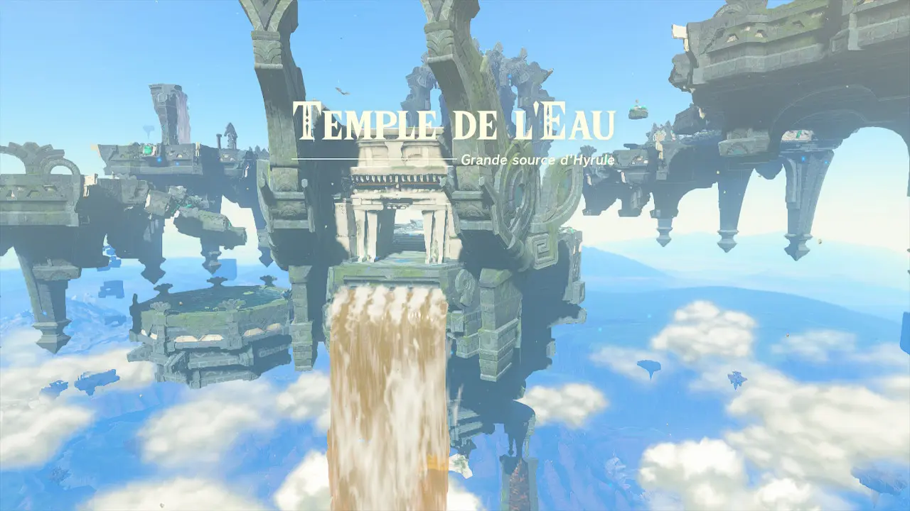

Les temples sont les donjons du jeu qui font partie des quêtes principales mais,
comme dans le premier jeu, ne sont pas obligatoires donc tu
peux directement aller combattre le boss final.
Les temples sont :
Le Temple de l'eau
Le temple de l’eau se trouve dans les cieux et est accessible uniquement avec l’armure Zora que l’on peut débloquer dans le domaine Zora.
Il faut ensuite suivre ce que dit Sidon qui est le roi des Zoras.
Les Zoras sont un peuple d’hommes-poissons.
En résumé, il faut trouver l’armure Zora avec laquelle il faut monter dans un archipel d’île céleste et
traverser d’île en île pour arriver dans le temple de l’eau.

Le temple est un temple à ciel ouvert où la gravité est faible.
Il faut activer 4 terminaux et c’est le plus facile des 4 temples.
Le boss est un poisson boueux. Pour le battre il faut utiliser le pouvoir de Sidon
(qui permet de se protéger et de faire des attaques puissantes avec de l’eau) et ensuite
l’attaquer quand il est immobilisé.
Le Temple du feu
Le temple du feu se trouve dans les souterrains et est accessible par une cavité
dans le volcan de la montagne de la mort dans le territoire des
Gorons. Le compagnon de Link pour ce temple est Yunobo,
c’est le même compagnon que dans le premier jeu.
Le temple est un vrai labyrinthe pour avancer dans le temple il faut chercher
sur la carte du donjon pour voir quel rail emprunter pour pouvoir monter dans les
étages dans le but d’activer les terminaux qui sont plus hauts Et il ne faut pas se
tromper de rail car cela peut beaucoup agacer.
C’est certainement le temple le plus dur dans ses énigmes.
Le boss est une espèce de crabe dont il faut détruire ses pattes avec le pouvoir de Yunobo et il faut ensuite attaquer son œil. Ce boss est assez facile à battre si on ne fait pas n’importe quoi.
Le Temple du vent
Le temple du vent est un bateau géant
Dans ce temple on est avec Babil qui est le fils du chef du
village des piafs.
Les piafs sont un peuple d’hommes-oiseaux qui peuvent voler.
Le boss est une espèce de dragon volant. Pour le battre il suffit d’attaquer le dessous
des ronds où il y a des piques avec des flèches avec des fruits de feu dessus.
Le Temple de la foudre
Le temple de la foudre est le seul temple qui se trouve sur la terre ferme.
Il se trouve dans le désert Gérudo au sud-ouest de la carte.
Il apparaît après avoir fait une petite énigme dans le désert.
Le temple de la foudre est une pyramide qui est rempli d’énigmes, dont des énigmes avec de la lumière
qu’il faut diriger avec des miroirs, qu’il faut résoudre pour activer les quatre terminaux
et combattre le boss.
Le boss est un genre d'insecte volant géant qui peut faire plusieurs attaques
: il peut cracher un jet d’eau, foncer sur le personnage et créer des tornades.
Pour le battre il faut utiliser le pouvoir de Riju qui est la coéquipière de Link dans ce temple
: il permet de, à l’endroit où la flèche qu’on a lancé atterris, attirer un éclair.
« Lancer » un éclair sur le boss le rend tout blanc (pour le rendre tout blanc vous pouvez aussi
faire une attaque de feu avec un fruit de feu par exemple) et si vous réussissez à lancer un autre
éclair sur lui quand il est blanc cela l’immobilisera, ce sera à ce moment-là qu’il faudra attaquer.